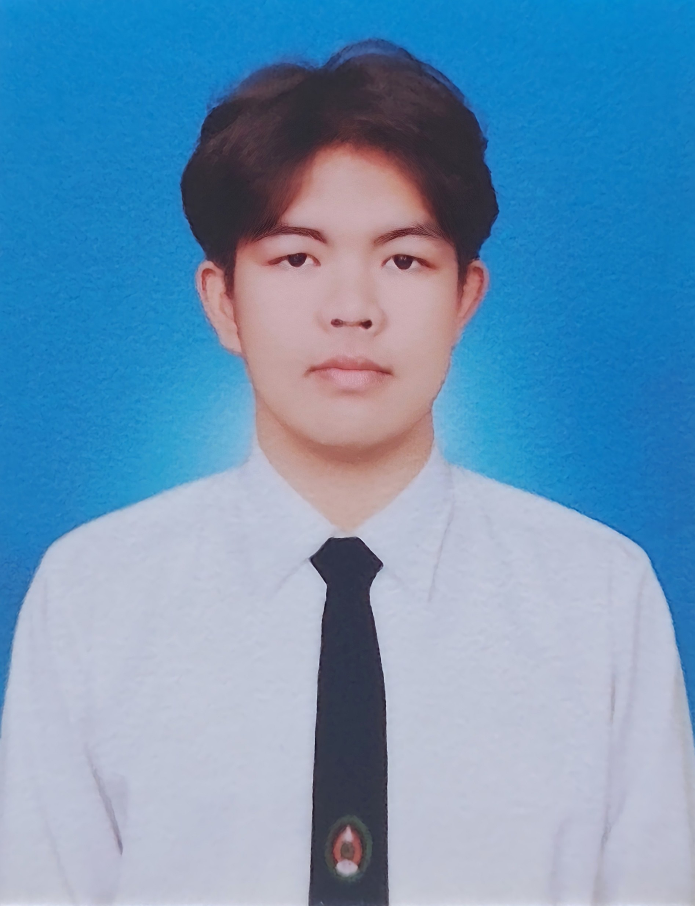
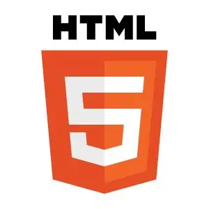

สวัสดีครับ ผมชื่อ นราธิพย์ ทาพล (ออม) ปัจจุบันกำลังศึกษาอยู่ชั้นปีที่ 2 สาขาวิชาวิศวกรรมซอฟต์แวร์ มหาวิทยาลัยราชภัฏนครปฐม ผมมีความหลงใหลและสนใจเป็นพิเศษในสายงาน Web Developer โดยเฉพาะด้าน Frontend เพราะชื่นชอบการสร้างสรรค์เว็บไซต์ที่สวยงามและใช้งานง่าย ปัจจุบันผมกำลังมุ่งมั่นพัฒนาทักษะด้านการเขียนโค้ดและเรียนรู้เทคโนโลยีใหม่ๆ อยู่เสมอ พร้อมเปิดรับโอกาสในการประยุกต์ใช้ความรู้ในห้องเรียนเพื่อแก้ปัญหาจริง และสะสมประสบการณ์เพื่อก้าวสู่การเป็นนักพัฒนาซอฟต์แวร์มืออาชีพในอนาคต

